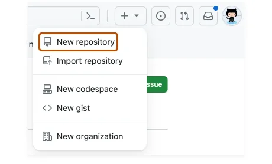
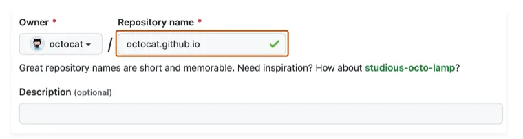
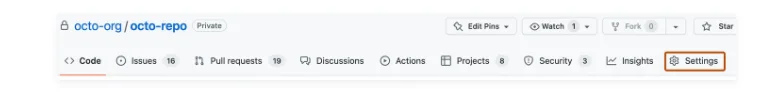
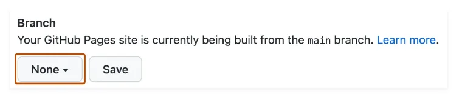

新手工具入門 · 把網頁放上網路
GitHub Pages
免費約 3 分鐘讀完
請 AI 做好一個網頁之後，想傳給同事看？GitHub Pages 可以免費把網頁放上網路，得到一個網址，手機、電腦打開就能看。
01先準備好網頁檔
請 AI 聊天助手做網頁時，可以說「請做成單一的 index.html 檔」。把它存到電腦，用瀏覽器打開，就能先在自己電腦上看。
檔名很重要 主要的網頁檔名一定要叫
index.html，GitHub Pages 才知道要先打開哪一個。有圖片的話，可以一起放在 assets 資料夾。02四個步驟放上網路
-
註冊 GitHub 帳號，建立一個 Repository
Repository（簡稱 repo）就是一個放檔案的資料夾。登入後按右上角的「＋」，選 New repository。

右上角「＋」→ New repository -
取一個名字，選 Public，按建立
名字用英文，例如
my-first-page，它會變成網址的一部分。可見度選 Public，再按綠色的建立按鈕。
在 Repository name 填名字 -
上傳 index.html
在 repo 頁面按 Add file → Upload files，把
index.html（和 assets 資料夾）拖進去，最後一定要按綠色的 Commit changes 才算存好。 -
開啟 GitHub Pages
按上方的 Settings，左邊選 Pages，在 Branch 選
main，按 Save。
上方選單最右邊的 Settings 
Branch 從 None 改成 main，按 Save
03完成！你的網址長這樣
等 1～幾分鐘，就能用這個網址看到網頁：
https://你的帳號.github.io/repo名稱/例如我第 5 堂的遊戲：lcycool-ht.github.io/chem-day-safety。之後要更新，只要重新上傳新的 index.html，網頁就會自動更新。
注意 Public 代表全世界都看得到，網頁和檔案裡不要放個資或公司機密。